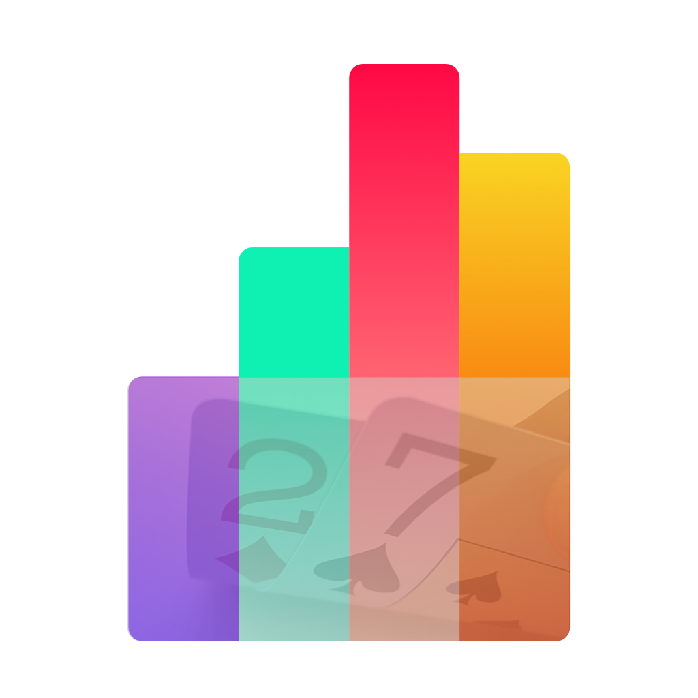
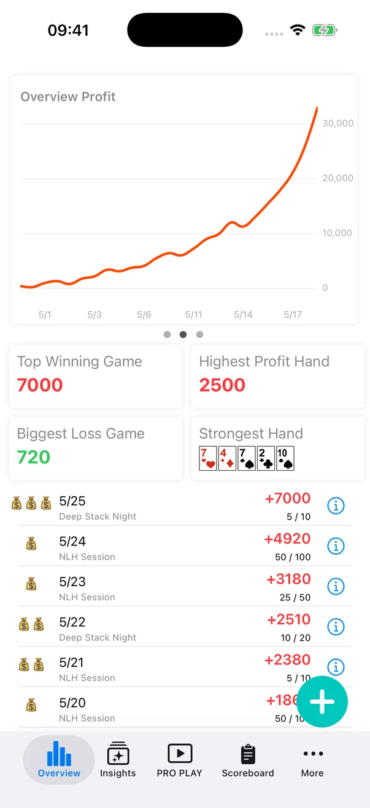
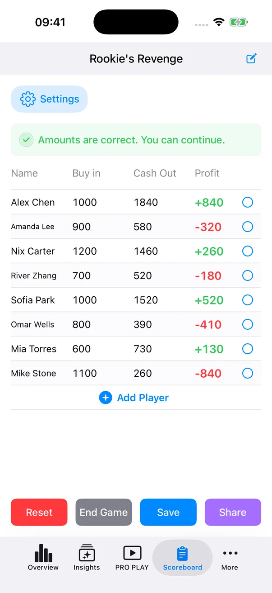
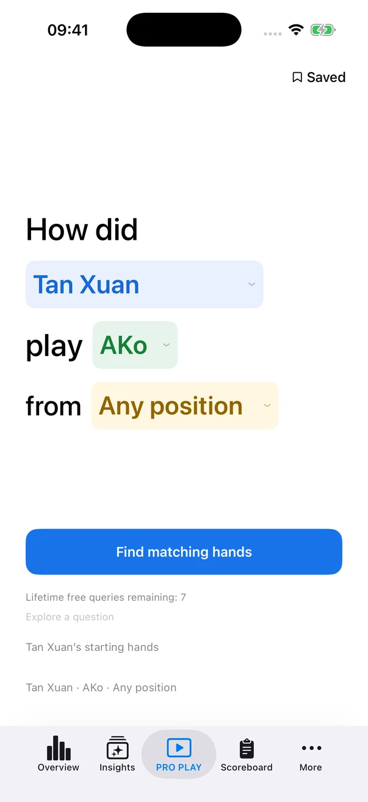
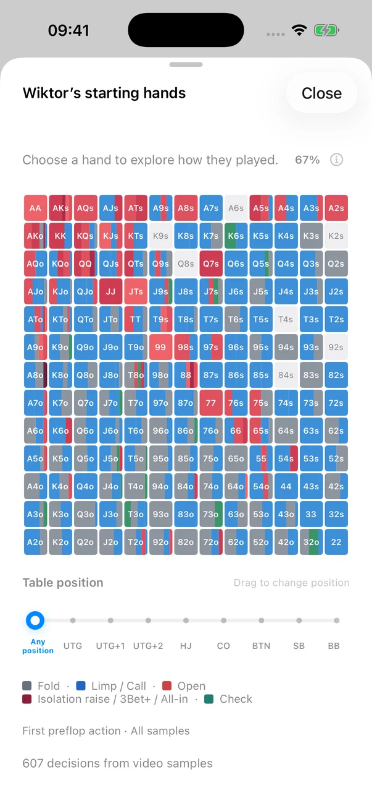
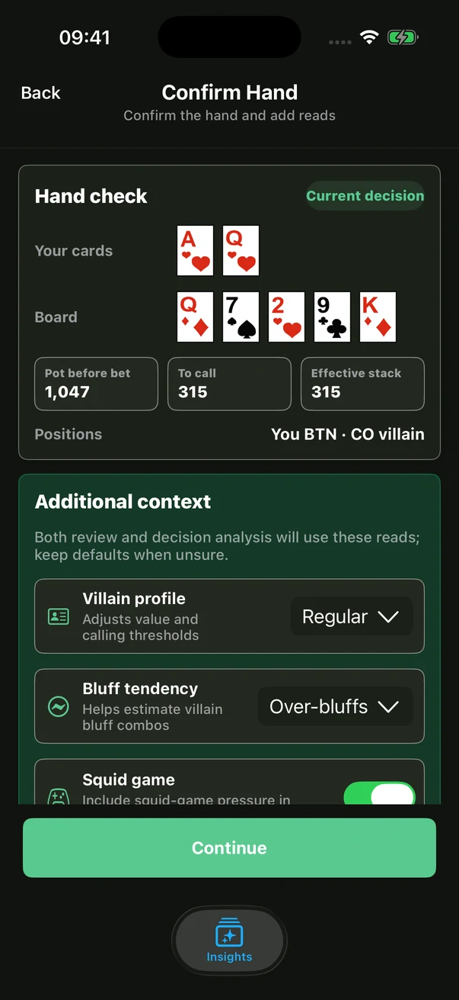
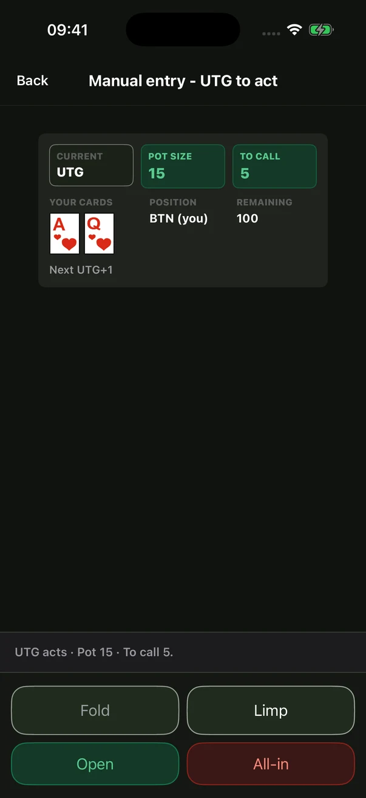

SESSION TRACKING
Every session.
The full picture.
Log buy-ins, cash-outs and results. Look back through session history and profit charts to see how your game develops.

SevenDeucePlusFOR THE GAME YOU LOVE
Track your results, settle your home games and revisit the decisions that matter. Keep your poker life together, from one evening with friends to the bigger picture.
For iPhone & iPad · Free download · In-app purchases

YOUR POKER TOOLKIT
Keep the details from this game. Learn something for the next.
SESSION TRACKING
Log buy-ins, cash-outs and results. Look back through session history and profit charts to see how your game develops.
SCOREBOARD
Keep everyone’s buy-ins and cash-outs on one board. Check the totals, see each player’s net result and share the results with the table.

PRO PLAY
Explore real hands from players like Tan Xuan and Wiktor. Filter by cards and position, browse starting-hand ranges, save hands and jump into the original video.


INSIGHTS
Rebuild the action and add opponent context for an AI-assisted review. Use the feedback as a study aid; AI can make mistakes.


FRIENDS
Friends keeps player profiles, avatars, tags and notes together. Add familiar players straight to the scoreboard when it’s time to settle up.
POKER RECORDS & HOME GAMES
PRICING
Free to download, with usage limits. PRO PLAY includes 7 free queries in total, then requires an eligible subscription or BB credits. Insights analysis uses BB credits separately; a subscription does not include unlimited AI analysis. Check the app for available plans, allowances and local prices before purchasing.
READY FOR YOUR NEXT SESSION?
For iPhone & iPad · Free download · In-app purchases
SUPPORT & FEEDBACK
SevenDeucePlus has a steady community of regular users and continues to evolve. Bug reports, feature requests and stories about how you use it are always welcome.
Send feedback ↗dmoment+sdp@gmail.com
Actual English app screenshots with sample data. The app supports English and Chinese.